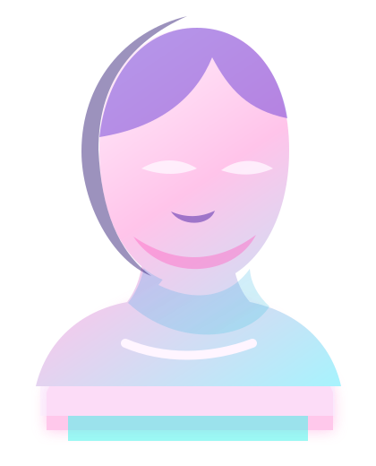

Tokyo-86 / Ara cloud agent
Acme workspace

Neon kaiwa / session interface
Redesign the Ara app main UI
Primary in-app workspace with session context, repo activity, status, and chat preserved in a pastel arcade dream.
Tokyo-86 / Ara cloud agent

Neon kaiwa / session interface
Primary in-app workspace with session context, repo activity, status, and chat preserved in a pastel arcade dream.